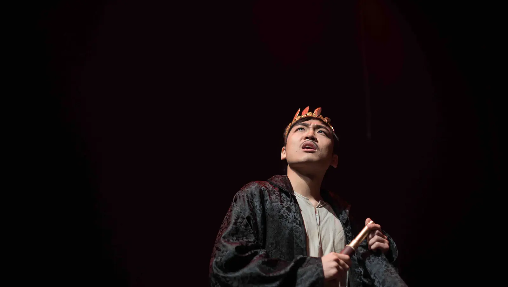
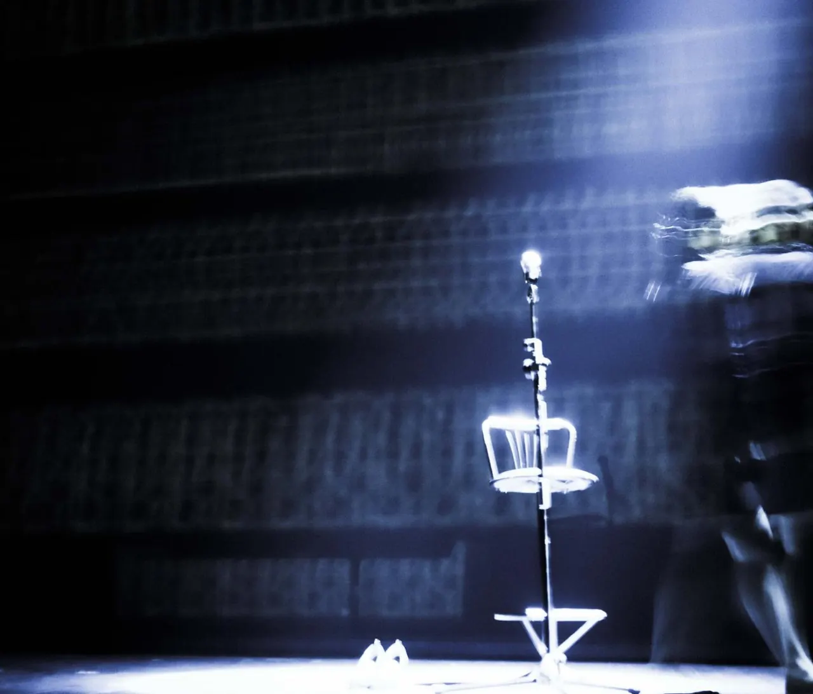
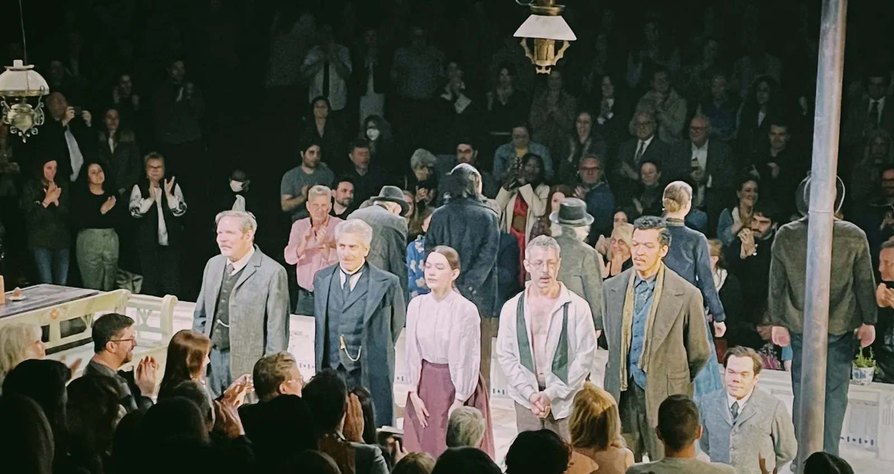

Theatre in Singapore and Seattle
I act, direct and design for the stage: 13 productions since 2014, six in Singapore and seven in Seattle.
Recent productions
Six of the 13, newest first. Each page has the cast, the crew and the photographs.


Roles across 13 productions
Some shows count twice. In Romulus the Great I played the lead and assisted the director.
- CastRomulus the Great, Instant Noodles II, America "250"8 productions
- DirectionDirector of The Pillars of Society, assistant on three more4 productions
- DesignStage for The Pillars of Society, lighting for Young People Social Death Archive2 productions
- Producing and advisingCo-producer of Yun's Lab, advisor to two KEVII productions3 productions

Reviews and other writing
Mostly in Chinese: three plays seen in New York in May 2024, three films and three pieces of my own.

Theatre reviews
- 信仰的幻灭与虚空的生活Uncle Vanya, with Steve Carell2024
- 后疫情时代的易卜生An Enemy of the People, with Jeremy Strong2024
- 母亲的碎片散落在母亲节Mary Jane, with Rachel McAdams2024
Film reviews
- 自我毁灭的好莱坞，生生不息的光影Babylon2023
- 过誉、小年、和陪跑的马丁麦克唐纳The 95th Academy Awards2023
- 男主可以是女主自我意识的外化投射吗？Last Year at Marienbad2023
Other writing
- Dine AloneOn eating alone2026
- 2025年冬Notes from December 20252025
- Bad Weather In YakimaA short story2023
About the name Richthofen
After the Red Baron, a nickname since secondary school. No relation, and no plane.
I have lived in Chongqing, Singapore, Oslo and Pittsburgh, and now the Seattle area. Theatre started in 2012 at NUS King Edward VII Hall. At Carnegie Mellon I took an acting class at the School of Drama.
By day I work on compute infrastructure at Microsoft AI. Before that: Snowflake, AWS Lambda and Sea.
Read the about page